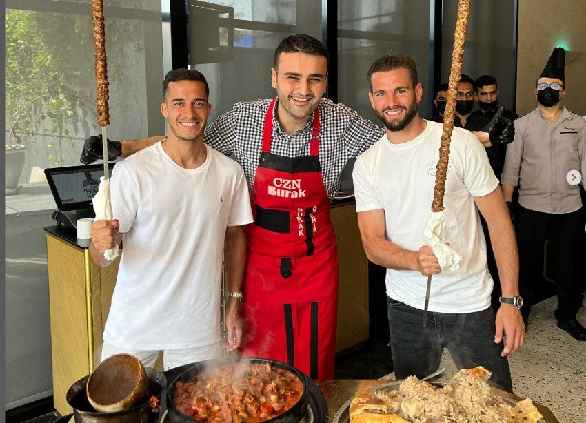

Kebab Recipe

This tutorial is all you need to make the BEST authentic
kebab recipe. Grilled are skewers of ground beef and lamb mixed
with fresh parsley, onions, garlic and warm Middle Eastern spices!
These kabobs will feed a crowd and there are many sides and salads
you can serve alongside.
Ingredients
1 medium yellow onion, quartered
2 garlic cloves
1 whole bunch parsley, stems removed (about 2 packed cups parsley leaves)
1 lb ground beef
1/2 lb ground lamb
1 slice of bread, toasted until browned and soaked in water until fully tender
Salt and pepper
1 1/2 tsp ground allspice
1/2 tsp cayenne pepper
1/2 tsp ground green cardamom
1/2 tsp ground sumac
/2 tsp ground nutmeg
1/2 tsp paprika
Pita bread to serve
For the Fixings:
Tahini Sauce
Tomato wedges
Onion wedges
More parsley
Instructions
- Soak 10 wooden skewers in water for about 30 minutes to 1 hour. Remove from water when you are ready to begin. Lightly oil the grates of a gas grill and preheat it to medium-high for about 20 minutes.
- Prepare pita bread and fixings. If you plan to, make the tahini sauce from this recipe. Prepare other sides and salads before you begin grilling.
- In a food processor, chop the onion, garlic, and parsley.
- Add the beef, lamb, bread (be sure to squeeze out the water completely), and the spices. Run the processor until all is well combined forming a pasty meat mixture.
- Remove the meat mixture from the food processor and place in a large bowl. Take a fistful portion of the meat mixture and mold it on a wooden skewer. Repeat the process until you have run out of meat. For best results, make sure each kofta kebab is about 1 inch in thickness.
- Lay the skewered kofta kebabs on a tray lined with parchment paper
- Place the kofta kebabs on the lightly oiled, heated gas grill. Grill on medium-high heat for 4 minutes on one side, turn over and grill for another 3-4 minutes.
- Serve the kofta kebabs immediately with pita bread, tahini and the fixings you prepared. See suggestions for sides and related recipes.